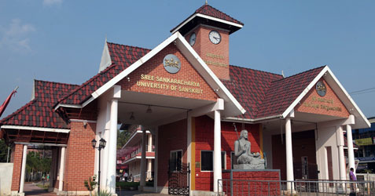

SSUS most commonly refers to the Sree Sankaracharya University of Sanskrit, a public university located in Kalady, Kerala, India. Established in 1993, the university is dedicated to teaching and research in Sanskrit, Indology, Indian philosophy, social sciences, fine arts, and foreign languages.
The university promotes higher education and cultural heritage through academic excellence, innovative research, and community engagement. SSUS has various regional centers across Kerala and provides opportunities for students and researchers in multiple disciplines.
This portal acts as a digital information system for educational and community awareness. It helps users explore university information, facilities, academic activities, and related resources.
